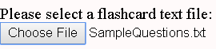

Instructions
This website is designed to accommodate custom flashcard sets.
Get Started:
Creating a flashcard file
A flashcard set consist of a text file with each question-answer pair on a new line. Each question and answer should be separated by a tilde (~) character. For example a set containing the two flashcards:
Q1: How many sets are in the power set of 'A'? A1: There are 2^|A| sets in the power set. Q2: What is a Eulerian cycle? A2: A graph cycle in which each edge is used exactly once. Should be formatted in the text file as:
Selecting your file
Use the Choose File button to select your flashcard file 